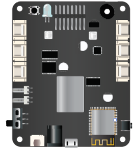
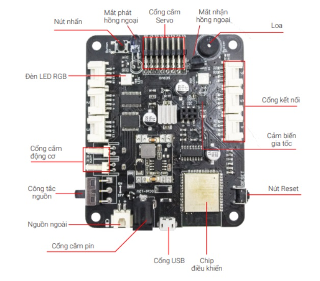

Phần cứng
xController được thiết kế bởi Ohstem với khả năng lập trình đa nền tảng như Block, Arduino, MicroPython.
{kind=link}
Thông số kỹ thuật
xController Board có các tính năng phần cứng sau:
Bộ vi điều khiển ESP-32
Bộ xử lý ：Bộ vi xử lý lõi kép Tensilica LX6（một để Xử lý Kết nối Tốc độ Cao và một để Phát triển Ứng dụng Độc lập）
Tần số chính: tần số đồng hồ lên đến 240mhz
SRAM：520KB
Flash：8MB
Tiêu chuẩn Wi-Fi：FCC/CE/TELEC/KCC
Wi-Fi Alliance：802.11 b/g/n/d/e/i/k/r (802.11n，high speed 150 Mbps)，A-MPDU and A-MSDU packed，support 0.4us protective interval
Dải tần số：2.4~2.5 GHz
Giao thức BlueTooth ：Tuân theo tiêu chuẩn BlueTooth 4.2 BR / EDR và BLE
Truyền phát âm thanh qua Bluetooth ：CVSD và âm thanh SBC công suất thấp ：10uA
Chế độ cấp nguồn: - Sử dụng cáp micro USB nối với máy tính (dùng khi lập trình) hoặc kết nối với củ sạc điện thoại, sạc dự phòng - Sử dụng cặp pin sạc 18650 8.4V cắm vào 1 trong 2 cổng nguồn có trên board - Sử dụng nguồn DC adapter 7-12V cắm vào jack tròn trên board
Bạn có thể bật tắt nguồn điện bằng công tắc trên bo (chỉ áp dụng với 2 cổng cắm nguồn, nguồn điện từ USB sẽ không bị ảnh hưởng). Khi sử dụng động cơ thì chúng ta cần cấp nguồn bằng pin hoặc DC adapter vì nguồn từ cổng USB là không đủ.
Điện áp hoạt động：3.3V
Dòng hoạt động tối đa:200mA
Dòng tải tối đa::1000mA
Phần cứng tích hợp trên xController Board:
Bộ điều khiển động cơ DC 2 kênh
8 cổng kết nối cho động cơ servo
6 cổng mở rộng để giao tiếp với các module chức năng
2 đèn LED đa màu RGB
Loa (buzzer)
LED thu và LED phát hồng ngoại
Cảm biến gia tốc và Gyroscope MPU6050
Bố cục thành phần / Định nghĩa mã pin
{kind=link}
xController Board interface pin configuration
PORT |
Type |
Mô Tả |
PORT 1 |
I/O |
Digital Input, Analogue/Digital Output |
PORT 2 |
I/O |
Digital Input, Analogue/Digital Output |
PORT 3 |
I/O |
Digital Input, Analogue/Digital Output |
PORT 4 |
I/O |
Analogue/Digital Input, Analogue/Digital Output |
PORT 5 |
I/O |
Analogue/Digital Input, Analogue/Digital Output |
PORT 6 |
I/O |
Analogue/Digital Input, Analogue/Digital Output |